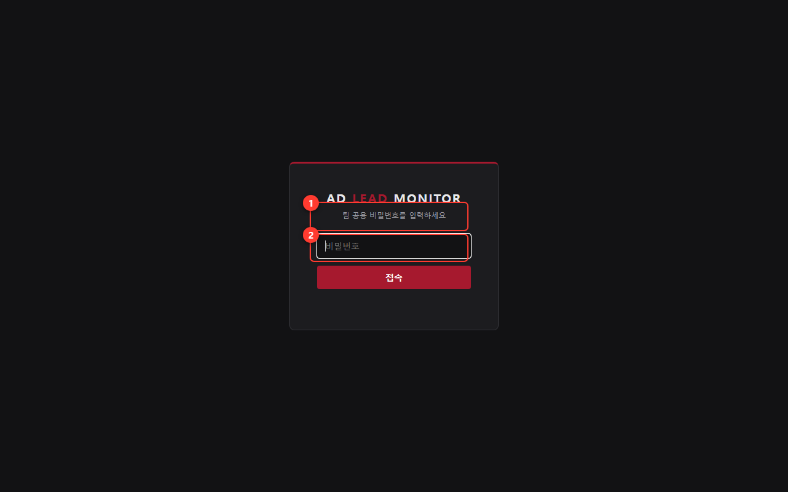
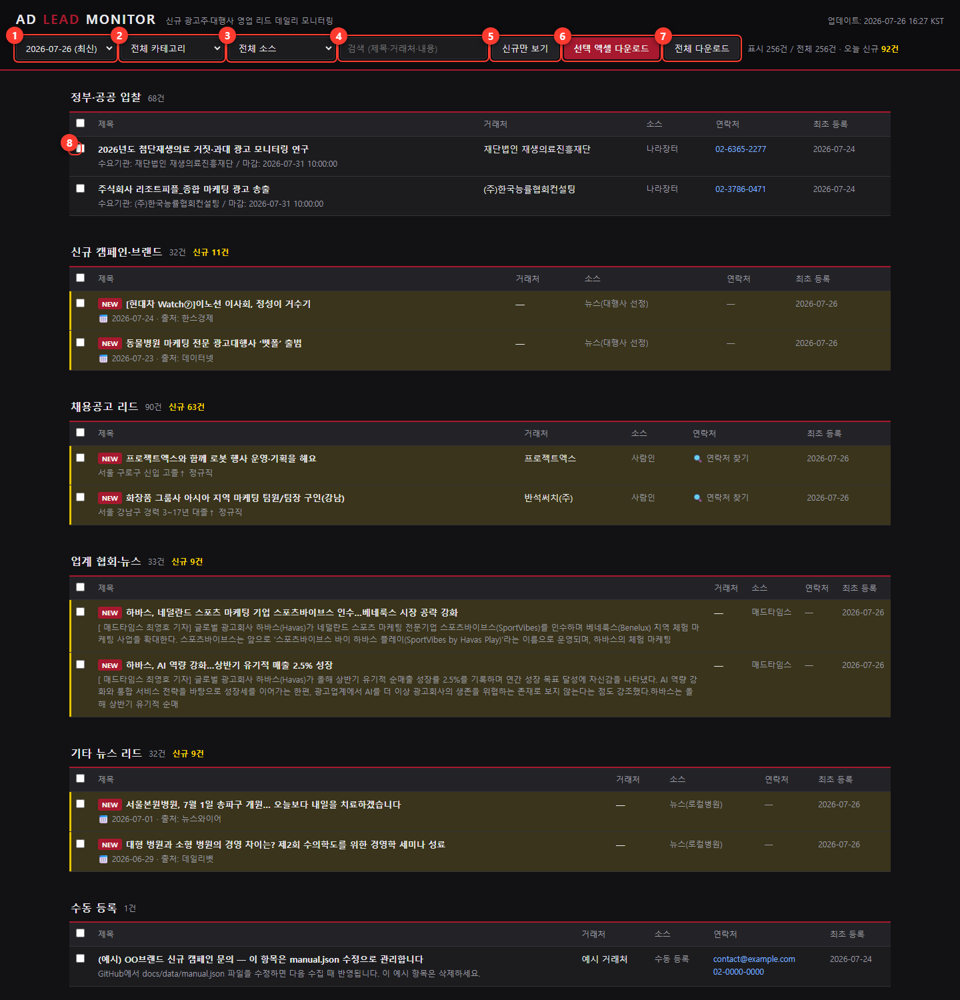
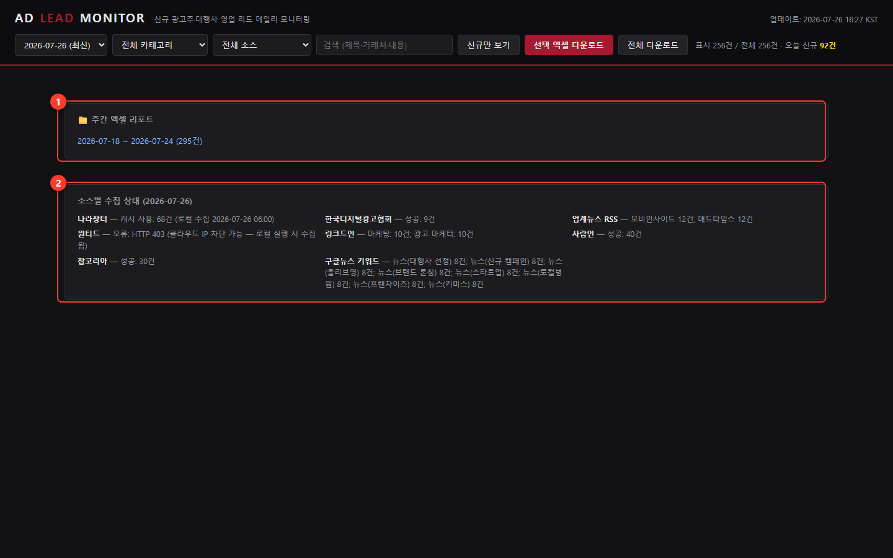

신규 광고주·대행사 영업 리드를 매일 아침 06:30(KST)에 자동 수집해 한 화면에 모아주는 팀 공용 대시보드입니다. 정부·공공 입찰(나라장터), 마케팅 채용공고(사람인·잡코리아·링크드인), 업계 뉴스(협회·전문지·구글뉴스) 등을 훑어서 "광고를 시작하려는 회사" 신호를 잡아냅니다. 별도 설치 없이 브라우저에서 접속만 하면 됩니다.
주소: https://claudeadkji-svg.github.io/ad-lead-monitor/ (사내 위키/북마크에 저장해 두세요)

로그인은 브라우저 탭을 닫기 전까지 유지됩니다. 탭을 새로 열면 다시 입력해야 합니다.
로그인하면 아래 화면이 나옵니다. 리드는 카테고리별 표로 정리되며, 노란 배경 + NEW 배지가 붙은 행이 오늘 처음 발견된 신규 리드입니다.

| 번호 | 이름 | 클릭하면 / 입력하면 |
|---|---|---|
| 1 | 조회 날짜 | 과거 날짜를 선택하면 그날 수집된 스냅샷을 그대로 다시 볼 수 있습니다. 기본은 최신. |
| 2 | 카테고리 필터 | "정부·공공 입찰", "채용공고 리드" 등 한 카테고리만 골라 봅니다. |
| 3 | 소스 필터 | 나라장터·사람인·매드타임스 등 수집처 하나만 골라 봅니다. 이번에 "브랜드브리프"가 추가되었습니다. |
| 4 | 검색창 | 제목·거래처·내용에서 입력한 단어를 실시간으로 찾습니다. 예: "게임", "화장품". |
| 5 | 신규만 보기 | 한 번 누르면 오늘 신규(NEW)만 남습니다. 다시 누르면 전체 표시로 복귀. |
| 6 | 선택 엑셀 다운로드 | 체크박스(⑧)로 고른 리드만 엑셀(.xlsx) 파일로 내려받습니다. |
| 7 | 전체 다운로드 | 현재 필터·검색 조건에 보이는 항목 전부를 엑셀로 내려받습니다. |
| 8 | 행 체크박스 | 다운로드할 리드를 고릅니다. 표 머리글의 체크박스를 누르면 그 카테고리 전체가 선택됩니다. |
대시보드를 끝까지 내리면 두 개의 관리용 블록이 있습니다.

| 카테고리 | 소스 | 무엇이 잡히나 |
|---|---|---|
| 정부·공공 입찰 | 나라장터 | 광고·홍보 용역 입찰 공고 (마감일 포함) |
| 채용공고 리드 | 사람인 · 잡코리아 · 링크드인 | 마케팅/광고 담당자를 뽑기 시작한 회사 = 광고 예산이 생긴 신호 |
| 업계 협회·뉴스 | 한국디지털광고협회 · 모비인사이드 · 매드타임스 · 브랜드브리프 (NEW) | 대행사 선정, 신규 캠페인, 업계 동향 기사 |
| 기타 뉴스 리드 | 구글뉴스 키워드 8종 | "대행사 선정" "브랜드 론칭" 등 키워드에 걸린 기사 |
| 수동 등록 | manual.json | 팀이 직접 추가한 리드 (GitHub에서 docs/data/manual.json 편집) |
새로고침(F5) 후 다시 로그인해 보세요. 그래도 "데이터 로드 실패"가 나오면 관리 담당자에게 알려주세요.
날짜 선택(①)에서 어제 날짜를 고르면 어제 스냅샷 그대로 볼 수 있습니다. 입찰 공고는 마감되면 다음 수집에서 빠질 수 있습니다.
GitHub 저장소의 docs/data/manual.json에 항목을 추가하면 다음 수집 때 "수동 등록" 카테고리로 표시됩니다. 편집 권한은 관리 담당자에게 요청하세요.
구글뉴스 키워드는 저장소의 keywords.json에서 관리합니다. 추가/삭제 요청은 관리 담당자에게 전달해 주세요.